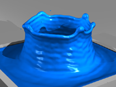

Particle-based Simulation of Fluids and Solids
I became more interested in particle-based simulation in recent years, because of its simplicity and flexibility in animating many real-world fluid and solid behaviors. For fluids, I am specifically interested in simulating thin features, such as bubbles, streamlets, and capillary waves. For example, my research team defined a foam bubble as a particle and modeled its irregular shape by a Voronoi diagram. Using this representation, our simulator can efficiently animate foams with a large number of bubbles, which are too computationally expensive to handle otherwise. Later my colleagues and I studied tensile instability in smoothed particle hydrodynamics. Based on this study, we developed a new surface tension scheme for preserving thin features in free-surface flows. Recently, we presented a novel technique to animate capillary waves on top of a particle-based simulator, so that the animation result can be enriched by wave effects that are lost in particle-based simulation.
Brush painting system
To explore the use of fluid simulation in practical applications, our research team collaborates with Adobe Research on the development of a real-time physics-based brush painting system. This system uses a hybrid fluid representation: the paint near a brush is represented by particles, while the rest of the paint is represented by a signed distance field defined on an Eulerian grid.
To implement this system on the GPU, we presented a series of new methods to handle the challenge of coupling paint, brush, and canvas together. The prototype of this system has been presented at SIGGRAPH Asia 2016 and GPU Technology Conference 2016.
A unified meshless framework
Given the recent research progress in smoothed particle hydrodynamics, peridynamics, and position-based dynamics, I believe that it is now the right time to formulate a meshless framework for unified simulation of both solids and fluids. Unlike previous frameworks, my framework will use absolutely no mesh, even for elastic bodies. This framework is attractive only when it is efficient and compatible with GPU acceleration.
To this end, my team will explore the transfer of real-time simulation techniques from a mesh-based representation to a meshless representation, which has not been comprehensively studied before.
Other fluid simulation methods
Besides particle-based methods, I have also investigated other ways to simulate fluids in recent years. This includes a deformable surface model for water drop simulation and an Eulerian convection scheme for avoiding numerical dissipation and simulating fluid mixing effects.
RELATED PUBLICATIONS

Sheng Yang, Xiaowei He, Huamin Wang, Sheng Li, Guoping Wang, Enhua Wu and Kun Zhou. 2016.
 Zhili Chen, Byungmoon Kim, Daichi Ito and Huamin Wang.
2015.
Zhili Chen, Byungmoon Kim, Daichi Ito and Huamin Wang.
2015.
[PDF 14MB]
[MP4 in H264, 95MB]
 Xiaowei He, Huamin Wang, Fengjun Zhang, Hongan Wang, Guoping Wang, Kun Zhou and Enhua Wu. 2015.
Xiaowei He, Huamin Wang, Fengjun Zhang, Hongan Wang, Guoping Wang, Kun Zhou and Enhua Wu. 2015.
[PDF 4.2MB]
[MP4 in H264, 58MB]
 Xiaowei He, Huamin Wang, Fengjun Zhang, Hongan Wang, Guoping Wang and Kun Zhou. 2014.
Xiaowei He, Huamin Wang, Fengjun Zhang, Hongan Wang, Guoping Wang and Kun Zhou. 2014.
[PDF 6.7MB]
 Oleksiy Busaryev,
Tamal K. Dey, Huamin Wang and Zhong Ren.
2012.
Oleksiy Busaryev,
Tamal K. Dey, Huamin Wang and Zhong Ren.
2012.
[PDF 3.8MB]
[MP4 in H264, 98MB]
 Yizhong Zhang, Huamin Wang, Shuai Wang, Yiying Tong and Kun Zhou.
2012.
Yizhong Zhang, Huamin Wang, Shuai Wang, Yiying Tong and Kun Zhou.
2012.
[PDF 1.8MB]
[Bibtex]